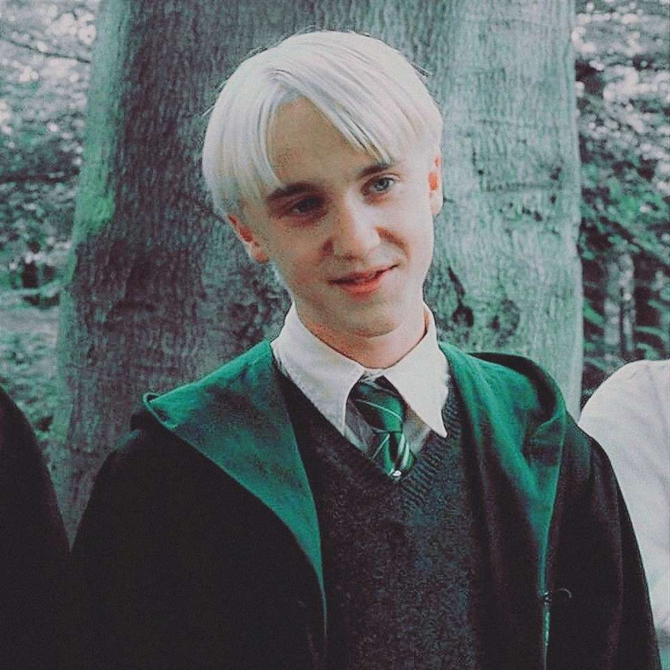
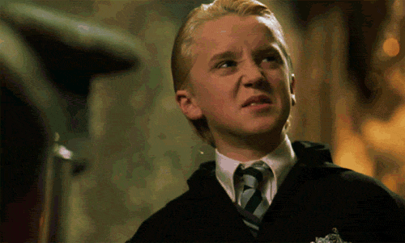

Draco Malfoy cresceu como filho único na Mansão Malfoy, a magnífica mansão em Wiltshire a qual estava em posse de sua família por muitos séculos. A partir do momento em que começou a falar, ficou claro para Draco que ele era triplamente especial: em primeiro lugar como um bruxo, em segundo lugar como um puro-sangue, e em terceiro lugar como um membro da família Malfoy. Draco fora criado numa atmosfera de pesar, na qual o Lorde das Trevas não tinha conseguido assumir o comando da comunidade bruxa, embora ele tenha sido prudentemente lembrado que tais sentimentos não devem ser expressos fora do pequeno círculo da família e dos seus amigos próximos, “ou papai pode entrar em apuros”. Na infância, Draco fez amizade principalmente com as crianças puro-sangue de comparsas ex-Comensais da Morte de seu pai, e, portanto, chegou em Hogwarts com um pequeno grupo de amigos já realizados, incluindo Theodore Nott e Vincent Crabbe. Como qualquer outra criança da idade de Harry Potter, Draco ouviu histórias do Menino Que Sobreviveu através de sua juventude. Muitas teorias diferentes já estavam em circulação durante anos sobre a forma como Harry sobreviveu ao que deveria ter sido um ataque letal, e uma das mais persistentes era de que o próprio Harry era um grande bruxo das trevas. O fato de que ele havia sido removido da comunidade bruxa parecia (para os puros-sangues mais otimistas) apoiar este ponto de vista, e o pai de Draco, o astuto Lúcio Malfoy, foi um dos que mais apoiaram fervorosamente a teoria. Foi reconfortante pensar que ele, Lúcio, poderia fazer parte de uma segunda chance de dominar o mundo; este menino Potter poderia provar ser outro, e ainda maior, campeão puro-sangue. Foi, portanto, sabendo que não estava fazendo nada que seu pai não fosse aprovar, e na esperança de que ele pudesse ser capaz de transmitir alguma notícia interessante para casa, que Draco Malfoy ofereceu a Harry Potter sua mão quando ele percebeu que Harry estava no Expresso de Hogwarts em seu primeiro ano. A recusa de Harry às propostas amigáveis de Draco, e o fato de que ele já tinha formado fidelidade a Ron Weasley, cuja família é um anátema para os Malfoy, torna Malfoy contra Harry imediatamente. Draco percebeu, corretamente, que as esperanças selvagens dos ex- Comensais da Morte – de que Harry Potter era outro, e melhor, Voldemort - são completamente infundadas, e sua inimizade mútua é assegurada a partir desse ponto.  Muito do comportamento de Draco na escola foi modelado na pessoa mais impressionante que ele conhecia - seu pai - e ele copiou fielmente a maneira fria e desdenhosa de Lúcio a todos fora de seu círculo interno. Após ter recrutado um segundo capanga (Crabbe já estando em posição pré-Hogwarts) no trem para a escola, o menos fisicamente imponente Malfoy usou Crabbe e Goyle como uma combinação de capangas e guarda-costas ao longo de seus seis anos de vida escolar. Os sentimentos de Draco em relação a Harry foram sempre baseados, em grande parte, na inveja. Embora ele nunca tenha procurado fama, Harry fora, sem dúvida, a pessoa mais comentada e admirada na escola; e isso, naturalmente, abalava um menino que tinha sido criado para acreditar que ele ocupava uma posição quase real dentro da comunidade bruxa. Além disso, Harry era mais talentoso em voo, uma habilidade em que Malfoy estava confiante de que ele iria ofuscar todos os outros alunos do primeiro ano. O fato de que o mestre de Poções, Snape, tinha uma preferência pelo Malfoy, e desprezava Harry, era apenas uma ligeira compensação.  Draco recorreu a muitas táticas sujas diferentes em sua busca perpétua para provocar Harry, ou desacreditá-lo aos olhos dos outros; incluindo - mas não limitando-se a isso - dizer mentiras sobre ele à imprensa, a fabricação de emblemas insultuosos a ele para por nas vestes, tentativas de amaldiçoá-lo por trás, e vestir-se como um dos Dementadores (a quem Harry tinha-se mostrado particularmente vulnerável). No entanto, Malfoy tinha seus próprios momentos de humilhação nas mãos de Harry, notadamente no campo de Quadribol, e nunca esqueceu a vergonha de ser transformado em um furão quicante por um professor de Defesa Contra as Artes das Trevas. Enquanto muitas pessoas pensavam que Harry Potter - que havia testemunhado o renascimento do Lorde das Trevas - era um mentiroso ou um fantasista, Draco Malfoy era um dos poucos que sabia que Harry estava dizendo a verdade. Seu próprio pai tinha sentido a Marca Negra queimar e havia voado para juntar-se novamente ao Lorde das Trevas, testemunhando o duelo de Harry e Voldemort no cemitério. As discussões sobre esses eventos na Mansão Malfoy deu origem a sensações conflitantes em Draco Malfoy. Por um lado, ele ficou entusiasmado por saber secretamente que Voldemort havia retornado, e com o que seu pai sempre havia descrito como dias de glória da família estavam de volta mais uma vez. Por outro lado, as discussões sussurradas sobre a maneira que Harry havia, mais uma vez, escapado às tentativas do Lorde das Trevas para matá-lo, causou em Draco mais pontadas de raiva e inveja. Por mais que os Comensais da Morte não gostassem de Harry e vissem-no como um obstáculo e como um símbolo, ele foi discutido a sério como um adversário, enquanto Draco ainda estava relegado ao status de estudante, status este que lhe fora dado pelos Comensais da Morte que se reuniam na casa de seus pais. Embora eles estivessem em lados opostos da batalha, Draco sentia inveja do status de Harry. Ele até alegrou-se imaginando o triunfo de Voldemort, vendo sua família honrada sob um novo regime, e ele mesmo aclamado em Hogwarts como o filho importante e impressionante do segundo-comando de Voldemort. A vida escolar deu uma reviravolta no quinto ano de Draco. Embora fosse proibido de discutir em Hogwarts o que ouvia em casa, Draco teve o prazer de triunfos insignificantes: ele era um Monitor (e Harry não era) e Dolores Umbridge, a nova professora de Defesa Contra as Artes das Trevas, parecia detestar Harry tanto quanto ele detestava. Ele se tornou um membro da Brigada Inquisitorial de Dolores Umbridge, e fez como sua principal tarefa tentar descobrir o que Harry e sua gang de transgressores estavam dispostos a fazer, uma vez que formaram e treinaram, em segredo, como uma organização proibida, a Armada de Dumbledore. No entanto, em seu momento de triunfo, quando Draco havia encurralado Harry e seus companheiros, e quando parecia que Harry seria expulso por Umbridge, Harry escorregou por entre os dedos. Pior ainda, Harry conseguiu frustrar a tentativa de Lúcio Malfoy de matá-lo, e o pai de Draco fora capturado e enviado a Azkaban. O mundo de Draco agora se desfez. Depois de terem estado, como ele e seu pai acreditavam, no limite de autoridade e prestígio, como nunca haviam conhecido antes, seu pai fora levado da casa da família e preso, muito longe, na temível prisão bruxa, guardada por Dementadores. Lúcio havia feito o papel de modelo e herói para Draco desde o nascimento. Agora, ele e sua mãe eram párias entre os Comensais da Morte; Lúcio foi um fracasso e desacreditado aos olhos do furioso Lord Voldemort. A existência do Draco havia sido enclausurada e protegida até esse ponto; ele tinha sido um menino privilegiado com pouco a lhe preocupar, garantido de seus status no mundo e com sua cabeça cheia de preocupações insignificantes. Agora, com seu pai longe e sua mãe triste e assustada, ele teve que assumir as responsabilidades de um homem. O pior ainda estava por vir. Voldemort, procurando punir Lúcio Malfoy ainda mais pelo estrago que foi a captura do Harry, demandou que Draco desempenhasse uma tarefa tão difícil que ele iria quase certamente falhar – e pagar com a sua vida. Draco precisava assassinar Alvo Dumbledore – como, Voldemort não se incomodou em dizer. Draco iria ser deixado sozinho em sua própria iniciativa, e Narcissa adivinhou, corretamente, que o seu filho estava sendo preparado para falhar por um bruxo que era desprovido de pena e não poderia tolerar seu fracasso. Furioso com o mundo que parecia ter subitamente se virado contra o seu pai, Draco aceitou ser um membro dos Comensais da Morte e realizar o assassinato que o Voldemort pediu. Nesse estágio inicial, cheio de desejo de vingança e de retornar seu pai para auxílio de Voldemort, Draco mal compreendia o que lhe estava sendo pedido para fazer. Tudo que ele sabia era que Dumbledore representava tudo que seu pai aprisionado desgostava; Draco conseguiu, bem facilmente, convencer a ele mesmo que também pensasse que o mundo seria um lugar melhor sem o diretor de Hogwarts, perto de quem a oposição a Voldemort sempre tinha se reunido. Cativo à ideia dele mesmo com um Comensal da Morte de verdade, Draco foi para Hogwarts com um senso de propósito em chamas. Gradualmente, entretanto, enquanto ele descobria que sua tarefa era muito mais difícil do que ele havia antecipado, e depois de ter chegado bem perto de acidentalmente matar duas outras pessoas ao invés de Dumbledore, os nervos do Draco começaram a falhar. Com a ameaça de danos contra a sua família e ele mesmo pairando sobre sua cabeça, ele começou a desmoronar sob a pressão. As ideias que Draco tinha sobre ele mesmo, e seu lugar no mundo, estavam desintegrando. Toda sua vida, ele havia idolatrado um pai que defendia violência e não tinha medo dele mesmo usá-la, e agora que seu filho descobriu em si mesmo um desgosto por assassinatos, ele achou que isso fosse um fracasso vergonhoso. Mesmo assim, ele não podia se libertar de seu condicionamento: ele repetidamente recusou a ajuda de Severo Snape, porque tinha medo que ele tentaria rouba a sua “glória”. Voldemort e Snape subestimaram Draco. Ele se provou um adepto da Oclumência (a mágica arte de repelir tentativas de ler a mente), a qual era essencial para o trabalho secreto que ele tinha pego. Após duas fadadas tentativas contra a vida do Dumbledore, Draco obteve êxito em seu engenhoso plano de introduzir um grupo inteiro de Comensais da Morte em Hogwarts, com o resultado de que Dumbledore foi, de fato, morto – embora não pelas mãos do Draco. Até mesmo quando enfrentado por um Dumbledore fraco e sem varinha, Draco se viu incapaz de realizar o coup de grâce (golpe de misericórdia), porque ele foi tocado pela bondade e dó do Dumbledore diante de seu provável assassino. Snape posteriormente acobertou Draco, mentindo para Voldemort sobre o Malfoy ter abaixado sua varinha antes mesmo da chegada do próprio Snape no topo da Torre de Astronomia; Snape enfatizou a habilidade do Draco em introduzir os Comensais da Morte dentro da escola, e encurralar Dumbledore para que ele, Snape, o matasse. Quando Lúcio foi libertado de Azkaban pouco tempo depois, foi permitido à família retornar para a Mansão dos Malfoy vivos. Contudo, agora eles estavam completamente desacreditados. De sonhos de terem o maior status sob o novo regime do Voldemort, os Malfoys se viram no ranking mais baixo dos Comensais da Morte; fraqueza e fracassos, para quais Voldemort foi desse momento em diante sarcástico e desdenhoso. Draco mudou, mesmo que ainda em conflito, com sua personalidade revelando a si mesma em suas ações durante o resto da guerra entre Voldemort e aqueles que estavam tentando pará-lo. Apesar de Draco não ter se livrado da esperança de retornar a família para sua elevada posição anterior, sua inconvenientemente desperta consciência o levou a tentar – sem convicção, talvez, mas discutivelmente tão bem quanto ele podia nas circunstâncias – a salvar Harry do Voldemort quando Harry foi capturado e arrastado até a Mansão dos Malfoy. Durante a batalha final em Hogwarts, entretanto, o Malfoy fez outra tentativa de capturar o Harry e assim salvar o prestigio de deus pais, e possivelmente suas vidas. Se ele poderia ter entregado Harry de verdade é um ponto irrelevante; eu suspeito que, como em sua tentativa de assassinar o Dumbledore, ele teria novamente percebido que na realidade, matar alguém é muito mais difícil na prática que na teoria. Draco sobreviveu ao cerco do Voldemort em Hogwarts porque Harry e Ron salvaram sua vida. Após a batalha, seu pai evitou a prisão fornecendo evidências contra os colegas Comensais da Morte, ajudando a assegurar a captura de diversos seguidores do Lord Voldemort que tinham fugido e se escondido. Os acontecimentos na adolescência madura do Draco mudaram sua vida para sempre. Ele teve as crenças com as quais cresceu desafiadas na maneira mais assustadora: ele havia experimentado terror e desespero, visto seus pais sofrerem por sua fidelidade, e testemunhado o desmoronar de tudo que sua família havia acreditado. Pessoas com quem Draco havia crescido, ou havia aprendido a odiar, como o Dumbledore, tinham oferecido a ele ajuda e gentiliza, e Harry Potter havia dado a ele a vida. Depois dos eventos da segunda guerra bruxa, Lúcio encontrou seu filho tão carinhoso quanto antes, mas recusando-se a seguir a mesma antiquada linha de puros-sangues. Draco se casou com a irmã mais jovem de um colega da Sonserina. Astoria Greengrass, que havia passado por uma similar (embora menos violenta e assustadora) conversão dos ideais puro-sangue para uma visão de vida mais tolerante, e Narcissa e Lúcio a acharam uma certa decepção como nora. Eles haviam tido altas esperanças de uma mulher cujo a família tivesse sido menciona no “Sacred Twenty-Eight” (algo como, “as vinte e oito sagradas”, que se refere às famílias puro-sangue), mas como Astoria recusava em educar o neto deles, Scorpius, na crença de que trouxas eram escória, encontros de família eram frequentemente carregados de tensão. Comentários da J.K sobre o Draco: Quando a série começa, Draco é, em quase todos os sentidos, o bully clássico. Com a crença inquestionável em seu próprio status superior, ele se embebedou do sangue-puro de seus pais. Ele inicialmente oferece a Harry amizade, supondo que a oferta precisa somente ser feita para ser aceita. A riqueza de sua família coloca-se em contraste com a pobreza dos Weasleys; isso também, é uma fonte do orgulho do Draco, mesmo que as credenciais de sangue dos Weasleys sejam idênticas a dele. Todo mundo reconhece o Draco porque todos já conheceram alguém como ele. A crença de tais pessoas em sua própria superioridade pode ser enfurecedora, risível ou intimidadora, dependendo das circunstancias nas quais cada um encontra com eles. Draco têm êxito em provocar todos esses sentimentos no Harry, Ron e Hermione vez ou outra. Meu editor britânico questionou o fato de que Draco era tão talentoso em Oclumência, o que Harry (por toda sua habilidade de conjurar um Patrono tão jovem) nunca dominou. Eu argumentei que era perfeitamente consistente com o caráter do Draco que ele achasse fácil desligar emoções, as compartimentar, e negar partes essenciais dele mesmo. Dumbledore conta a Harry, no fim da “Ordem da Fênix”, que é uma parte essencial de sua humanidade que ele possa sentir tamanha dor; com Draco, eu estava tentando mostrar que a negação da dor e a supressão do conflito interior só podem levar a uma pessoa danificada (que tem muito mais chance de infligir dano em outras pessoas). Draco nunca percebe que ele se torna, pela maior parte do ano, o verdadeiro senhor da Varinha das Varinhas. E é bom que ele não perceba, parte porque o Lord das Trevas é habilidoso em Legilimência, e teria matado Draco em um piscar de olhos se ele tivesse tido uma vaga ideia da verdade, mas também porque, apesar da sua consciência oculta, Draco continua sendo uma presa para todas as tentações que ele foi ensinado a admirar – violência e poder entre elas. Eu tenho pena do Draco, assim como eu sinto muito pelo Duda. Ser educado tanto pelos Malfoys quando os Dursleys seria uma experiência muito nociva, e Draco passa por experiências horríveis como um resultado direto dos princípios errados de sua família. Entretanto, os Malfoys possuem um encanto que os salva: eles amam uns aos outros. Draco é motivado grandemente por medo de algo acontecer aos seus pais ou a ele mesmo, enquanto Narcissa arrisca tudo quando mente para Voldemort no fim das Relíquias da Morte, e conta a ele que Harry está morto, meramente para que assim ela possa chegar ao filho dela. Por tudo isso, Draco permanece uma pessoa de moral duvidosa nos sete livros publicados, e frequentemente, eu tive motivos para comentar o quão assustada eu estive pelo número de meninas que se apaixonaram em particular por essa personagem fictícia (apesar de eu não desconsiderar o appeal do Tom Felton, que atua o Draco brilhantemente nos filmes e, ironicamente, é provavelmente a pessoa mais legal que você poderia encontrar). Draco tem todo o glamour sombrio de um anti-herói; meninas são muito propensas a romantizar tais pessoas. Tudo isso me deixou na posição indesejável de jogar um frio senso comum nos ardentes desvaneios dos leitores enquanto eu os contava, bem severamente, que Draco não estava escondendo um coração de ouro embaixo de todo aquele sorriso desdenhoso e preconceito e que não, ele e Harry não estavam destinados a terminar como melhores amigos. Eu imagino que Draco cresceu para conduzir uma versão modificada da existência de seu pai; independentemente rico, sem necessidade de trabalhar, Draco habita a mansão dos Malfoy com sua esposa e filho. Eu vejo em seus hobbies uma confirmação adicional de sua dupla natureza. A coleção de artefatos das trevas remonta a história da família, mesmo que ele os mantenha em caixas de vidro e não os use. Entretanto, seu estranho interesse em manuscritos de alquimia, dos quais ele nunca tenta fazer uma Pedra Filosofal, insinua o desejo por algo além da riqueza, talvez até mesmo o desejo de ser um homem melhor. Eu tenho altas esperanças de que ele vai educar o Scorpius para ser um Malfoy muito mais gentil e tolerante do que ele foi em sua própria juventude. Draco teve muitos sobrenomes antes que eu decidisse “Malfoy”. Várias vezes nos mais antigos rascunhos, ele é “Smart”, “Spinks” ou “Spungen”. Seu nome de batismo vem de uma constelação – o dragão – e mesmo assim o núcleo de sua varinha é de unicórnio. Isso foi simbólico. Há, afinal – e com o risco de reacender fantasias prejudiciais – algo bom ainda vivo no coração de Draco.